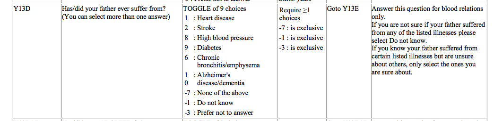
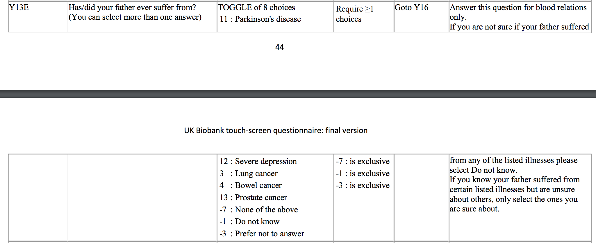
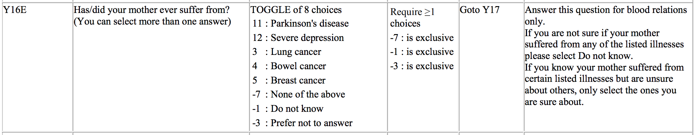
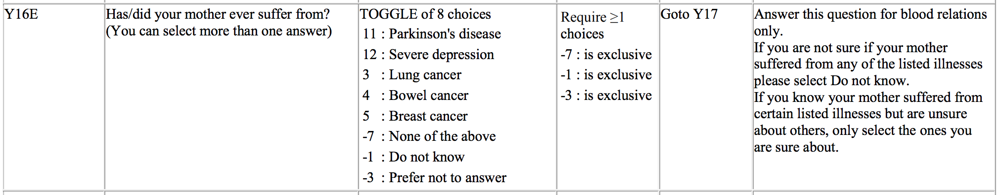

Parant illness information in UK Biobank (initial analysis)
Last update: Apr 11, 2020
rm(list = ls())
library(pander)
panderOptions('table.split.table', Inf)
library(ggplot2)
library(dplyr)
library(data.table)
options(datatable.fread.datatable = FALSE)
theme_set(theme_bw(base_size=15))
set.seed(2020)
# load some gists
source('https://gist.githubusercontent.com/liangyy/43912b3ecab5d10c89f9d4b2669871c9/raw/3ca651cfa53ffccb8422f432561138a46e93710f/my_ggplot_theme.R')
# load dependent scripts
source('../code/rlib_misc.R')1 About
Here we look into parent illness information in UK Biobank. As designed, we limit our scope to Europeans. The parent illness phenotypes were queried by Owen and the data is at /vol/bmd/meliao/data/2020-04-10_parent-illness.tar.gz. We also load the self-reported ancestry (after QC) processed by script at here and the resulting table is at /vol/bmd/yanyul/GitHub/ptrs-ukb/output/query_phenotypes_cleaned_up.csv.
To interpret the phenotype, we should refer to the document here which is the questionnaire used to collect these data. For our purpose, as stated in the “Notes” tab of Data-Field 20107, we need to look at questions:
- “Y13D” and “Y13E” for father illness;
- “Y16D” and “Y16E” for mother illness.
For the sake of convenience, I screenshot these questions as below.
   

Additionally, the “-1, -3, -7” choice are actually coded as “-11, -13, -17” for group 1 and “-21, -23, -27” for group 2 according to the “Notes” tab as shown below.

2 Digitalize the questions
y13d = data.frame(
code = c(1, 2, 8, 9, 6, 10, -17, -11, -13),
choice = c('Heart disease', 'Stroke', 'High blood pressure', 'Diabetes', 'Chronic bronchitis/emphysema', 'Alzheimer\'s disease/dementia', 'None of the above', 'Do not know', 'Prefer not to answer')
)
y13e = data.frame(
code = c(11, 12, 3, 4, 13, -27, -21, -23),
choice = c('Parkinson\'s disease', 'Severe depression', 'Lung cancer', 'Bowel cancer', 'Prostate cancer', 'None of the above', 'Do not know', 'Prefer not to answer')
)
y16d = data.frame(
code = c(1, 2, 8, 9, 6, 10, -17, -11, -13),
choice = c('Heart disease', 'Stroke', 'High blood pressure', 'Diabetes', 'Chronic bronchitis/emphysema', 'Alzheimer\'s disease/dementia', 'None of the above', 'Do not know', 'Prefer not to answer')
)
y16e = data.frame(
code = c(11, 12, 3, 4, 5, -27, -21, -23),
choice = c('Parkinson\'s disease', 'Severe depression', 'Lung cancer', 'Bowel cancer', 'Breast cancer', 'None of the above', 'Do not know', 'Prefer not to answer')
)
code = list()
code[['father']] = rbind(
y13d %>% mutate(grp = 1),
y13e %>% mutate(grp = 2)
) %>% distinct() %>% mutate(choice_w_grp = paste0(choice, ' (', grp, ')'))
code[['mother']] = rbind(
y16d %>% mutate(grp = 1),
y16e %>% mutate(grp = 2)
) %>% distinct() %>% mutate(choice_w_grp = paste0(choice, ' (', grp, ')'))3 Load data
df = list()
df[['father']] = fread('/Users/yanyul/Desktop/tmp/parent_illness/father_illness.csv', sep = ',')
df[['mother']] = fread('/Users/yanyul/Desktop/tmp/parent_illness/mother_illness.csv', sep = ',')
df_pheno = fread('/Users/yanyul/Documents/repo/github/ptrs-ukb/output/query_phenotypes_cleaned_up.csv', sep = ',')
# remove individuals with all columns being NA
for(i in names(df)) {
df[[i]] = df[[i]][rowSums(!is.na(df[[i]])) > 0, ]
}
# label with self reported ancestry
# only individuals passing ancestry QC and phenotype QC in ptrs-ukb are labeled
ancestry = list()
for(i in names(df)) {
ancestry[[i]] = df[[i]] %>% left_join(df_pheno %>% select(eid, meaning), by = 'eid') %>% pull(meaning)
}4 Process the choice code into individual x phenotype table
Each row is an individual. The questionnaire is a multiple choice question so that there are N columns recording everthing being selected. To extract the information we want, we unfold the raw data frame into individual-by-choice where each entry indicates the number of occurrence of one choice in the row. In principle, the occurrence should be either 0 or 1.
Perform un-folding
df_unfold = list()
for(i in names(df)) {
df_unfold[[i]] = unfold_parent_illness_code(df[[i]][, -1], code[[i]]$code, code[[i]]$choice_w_grp)
}Sanity check: Are occurrences all 0 or 1?
for(i in names(df_unfold)) {
message('In ', i, ' illness, # entry (the occurrence) > 1 = ', sum(df_unfold[[i]] > 1))
}## In father illness, # entry (the occurrence) > 1 = 0## In mother illness, # entry (the occurrence) > 1 = 0Next, we need to refine the zero’s in the table. The zeros could be:
- “no disease”
- “don’t know”
- “prefer not to answer”
This information should be added. First of all, let’s check if the above three options are exclusive. In other word, when they are set, other choices should not occur.
for(i in names(df_unfold)) {
for(g in 1 : 2) {
group_pheno = code[[i]] %>% filter(grp == g, code > 0) %>% pull(choice_w_grp)
group_exclude = code[[i]] %>% filter(grp == g, code < 0) %>% pull(choice_w_grp)
message('In ', i, ' illness group', g, ': ', '# of more than one exclusive choices are selected = ', sum(rowSums(df_unfold[[i]][, group_exclude]) > 1))
exclusive_selected = (rowSums(df_unfold[[i]][, group_exclude]) > 1) > 0
num_pheno_selected_when_exclusive = sum(rowSums(df_unfold[[i]][exclusive_selected, ][, group_pheno]) > 0)
message('In ', i, ' illness: ', '# of any phenotype choice is selected when exclusive choices are selected = ', num_pheno_selected_when_exclusive)
}
}## In father illness group1: # of more than one exclusive choices are selected = 0## In father illness: # of any phenotype choice is selected when exclusive choices are selected = 0## In father illness group2: # of more than one exclusive choices are selected = 0## In father illness: # of any phenotype choice is selected when exclusive choices are selected = 0## In mother illness group1: # of more than one exclusive choices are selected = 0## In mother illness: # of any phenotype choice is selected when exclusive choices are selected = 0## In mother illness group2: # of more than one exclusive choices are selected = 0## In mother illness: # of any phenotype choice is selected when exclusive choices are selected = 0We expect all zeros. This means that:
- Only one of the three exclusive choices are selected if they are selected.
- No other choices are selected when any of the exclusive choices is selected.
Now that we proceed to refine zeros. “None of the above” means true zero so that we take care of it manually.
df_refine = df_unfold
code_mapper = function(xx) {
# map
# -17, -27 to 0
# -13, -23 to -3
# -11, -21 to -1
if(xx == -17 | xx == -27) {
return(0)
} else if(xx == -13 | xx == -23) {
return(-3)
} else if(xx == -11 | xx == -21) {
return(-1)
}
}
for(i in names(df_unfold)) {
for(g in 1 : 2) {
group_pheno = code[[i]] %>% filter(grp == g, code > 0) %>% pull(choice_w_grp)
group_exclude = code[[i]] %>% filter(grp == g, code < 0)
for(p in group_pheno) {
for(e in 1 : nrow(group_exclude)) {
col_ = group_exclude$choice_w_grp[e]
code_ = code_mapper(group_exclude$code[e])
is_chosen = df_refine[[i]][, col_] == 1
df_refine[[i]][is_chosen, ][, p] = code_
}
}
}
}5 Summarize
Load Data summary in Data-Field page
df_ukb = list()
for(i in names(df_refine)) {
df_ukb[[i]] = read.csv(paste0('../external_data/', i, '_illness_data_table.csv')) # %>% pander(caption = paste0(i, ' illness summary page'))
df_ukb[[i]] = df_ukb[[i]] %>% mutate(type = 'case') %>% left_join(code[[i]], by = c('Category' = 'choice')) %>% select(choice_w_grp, type, Count) %>% rename(count_in_ukb_website_total = Count) %>% filter(!is.na(choice_w_grp))
}## Warning: Column `Category`/`choice` joining factors with different levels, coercing to character vector
## Warning: Column `Category`/`choice` joining factors with different levels, coercing to character vectordf_ukb_instance0 = list()
for(i in names(df_refine)) {
df_ukb_instance0[[i]] = read.csv(paste0('../external_data/', i, '_illness_data_table_instance0.csv')) # %>% pander(caption = paste0(i, ' illness summary page'))
df_ukb_instance0[[i]] = df_ukb_instance0[[i]] %>% mutate(type = 'case') %>% left_join(code[[i]], by = c('Category' = 'choice')) %>% select(choice_w_grp, type, Count) %>% rename(count_in_ukb_website_instance0 = Count) %>% filter(!is.na(choice_w_grp))
}## Warning: Column `Category`/`choice` joining factors with different levels, coercing to character vector
## Warning: Column `Category`/`choice` joining factors with different levels, coercing to character vectorCount the number of cases, controls, and others for all parent illness phentypes.
code_translator = function(xx) {
# translator:
# 0 to control
# 1 to case
# -1 to dont_know
# -3 to prefer_not_to_answer
mm = data.frame(
x = c(0, 1, -1, -3),
y = c('control', 'case', 'dont_know', 'prefer_not_to_answer')
)
o = rep('NA', length(xx))
for(i in 1 : nrow(mm)) {
o[xx == mm$x[i]] = as.character(mm$y[i])
}
return(o)
}
for(i in names(df_refine)) {
group_pheno = code[[i]] %>% filter(code > 0) %>% pull(choice_w_grp)
tmp = df_refine[[i]][, group_pheno]
tmp_eur = df_refine[[i]][, group_pheno][!is.na(ancestry[[i]]) & ancestry[[i]] == 'British', ]
tmp = tmp %>% reshape2::melt() %>% mutate(category = code_translator(value)) %>% group_by(variable, category) %>% summarize(count = n()) %>% ungroup()
tmp_eur = tmp_eur %>% reshape2::melt() %>% mutate(category = code_translator(value)) %>% group_by(variable, category) %>% summarize(count_eur = n()) %>% ungroup()
tmp = left_join(tmp, tmp_eur, by = c('variable', 'category'))
tmp %>%
left_join(df_ukb[[i]], by = c('variable' = 'choice_w_grp', 'category' = 'type')) %>%
left_join(df_ukb_instance0[[i]], by = c('variable' = 'choice_w_grp', 'category' = 'type')) %>%
# select(variable, category, count, Count) %>%
# rename(count_in_ukb = Count) %>%
pander(caption = paste0('Summary of ', i, ' illness')) %>%
cat
}## No id variables; using all as measure variables
## No id variables; using all as measure variables## Warning: Column `variable`/`choice_w_grp` joining factor and character vector, coercing into character vector| variable | category | count | count_eur | count_in_ukb_website_total | count_in_ukb_website_instance0 |
|---|---|---|---|---|---|
| Heart disease (1) | case | 141831 | 102946 | 164345 | 141831 |
| Heart disease (1) | control | 325622 | 230427 | NA | NA |
| Heart disease (1) | dont_know | 34413 | 22790 | NA | NA |
| Heart disease (1) | prefer_not_to_answer | 640 | 301 | NA | NA |
| Stroke (1) | case | 67988 | 48602 | 78249 | 67988 |
| Stroke (1) | control | 399465 | 284771 | NA | NA |
| Stroke (1) | dont_know | 34413 | 22790 | NA | NA |
| Stroke (1) | prefer_not_to_answer | 640 | 301 | NA | NA |
| High blood pressure (1) | case | 100125 | 70207 | 114044 | 100125 |
| High blood pressure (1) | control | 367328 | 263166 | NA | NA |
| High blood pressure (1) | dont_know | 34413 | 22790 | NA | NA |
| High blood pressure (1) | prefer_not_to_answer | 640 | 301 | NA | NA |
| Diabetes (1) | case | 44665 | 29865 | 51152 | 44664 |
| Diabetes (1) | control | 422788 | 303508 | NA | NA |
| Diabetes (1) | dont_know | 34413 | 22790 | NA | NA |
| Diabetes (1) | prefer_not_to_answer | 640 | 301 | NA | NA |
| Chronic bronchitis/emphysema (1) | case | 48671 | 36129 | 55688 | 48671 |
| Chronic bronchitis/emphysema (1) | control | 418782 | 297244 | NA | NA |
| Chronic bronchitis/emphysema (1) | dont_know | 34413 | 22790 | NA | NA |
| Chronic bronchitis/emphysema (1) | prefer_not_to_answer | 640 | 301 | NA | NA |
| Alzheimer’s disease/dementia (1) | case | 20478 | 15014 | 26512 | 20477 |
| Alzheimer’s disease/dementia (1) | control | 446975 | 318359 | NA | NA |
| Alzheimer’s disease/dementia (1) | dont_know | 34413 | 22790 | NA | NA |
| Alzheimer’s disease/dementia (1) | prefer_not_to_answer | 640 | 301 | NA | NA |
| Parkinson’s disease (2) | case | 10706 | 7974 | 11471 | 10706 |
| Parkinson’s disease (2) | control | 449373 | 320857 | NA | NA |
| Parkinson’s disease (2) | dont_know | 41965 | 27408 | NA | NA |
| Parkinson’s disease (2) | prefer_not_to_answer | 462 | 225 | NA | NA |
| Severe depression (2) | case | 16360 | 11870 | 17459 | 16360 |
| Severe depression (2) | control | 443719 | 316961 | NA | NA |
| Severe depression (2) | dont_know | 41965 | 27408 | NA | NA |
| Severe depression (2) | prefer_not_to_answer | 462 | 225 | NA | NA |
| Lung cancer (2) | case | 39275 | 29166 | 41788 | 39275 |
| Lung cancer (2) | control | 420804 | 299665 | NA | NA |
| Lung cancer (2) | dont_know | 41965 | 27408 | NA | NA |
| Lung cancer (2) | prefer_not_to_answer | 462 | 225 | NA | NA |
| Bowel cancer (2) | case | 25100 | 18454 | 26931 | 25100 |
| Bowel cancer (2) | control | 434979 | 310377 | NA | NA |
| Bowel cancer (2) | dont_know | 41965 | 27408 | NA | NA |
| Bowel cancer (2) | prefer_not_to_answer | 462 | 225 | NA | NA |
| Prostate cancer (2) | case | 33191 | 23962 | 35721 | 33191 |
| Prostate cancer (2) | control | 426888 | 304869 | NA | NA |
| Prostate cancer (2) | dont_know | 41965 | 27408 | NA | NA |
| Prostate cancer (2) | prefer_not_to_answer | 462 | 225 | NA | NA |
## No id variables; using all as measure variables
## No id variables; using all as measure variables## Warning: Column `variable`/`choice_w_grp` joining factor and character vector, coercing into character vector| variable | category | count | count_eur | count_in_ukb_website_total | count_in_ukb_website_instance0 |
|---|---|---|---|---|---|
| Heart disease (1) | case | 91433 | 65800 | 105893 | 91434 |
| Heart disease (1) | control | 390068 | 276935 | NA | NA |
| Heart disease (1) | dont_know | 20505 | 13503 | NA | NA |
| Heart disease (1) | prefer_not_to_answer | 500 | 226 | NA | NA |
| Stroke (1) | case | 65342 | 47390 | 75680 | 65343 |
| Stroke (1) | control | 416159 | 295345 | NA | NA |
| Stroke (1) | dont_know | 20505 | 13503 | NA | NA |
| Stroke (1) | prefer_not_to_answer | 500 | 226 | NA | NA |
| High blood pressure (1) | case | 144658 | 100513 | 163964 | 144657 |
| High blood pressure (1) | control | 336843 | 242222 | NA | NA |
| High blood pressure (1) | dont_know | 20505 | 13503 | NA | NA |
| High blood pressure (1) | prefer_not_to_answer | 500 | 226 | NA | NA |
| Diabetes (1) | case | 47047 | 30698 | 53669 | 47047 |
| Diabetes (1) | control | 434454 | 312037 | NA | NA |
| Diabetes (1) | dont_know | 20505 | 13503 | NA | NA |
| Diabetes (1) | prefer_not_to_answer | 500 | 226 | NA | NA |
| Chronic bronchitis/emphysema (1) | case | 26724 | 19524 | 30807 | 26724 |
| Chronic bronchitis/emphysema (1) | control | 454777 | 323211 | NA | NA |
| Chronic bronchitis/emphysema (1) | dont_know | 20505 | 13503 | NA | NA |
| Chronic bronchitis/emphysema (1) | prefer_not_to_answer | 500 | 226 | NA | NA |
| Alzheimer’s disease/dementia (1) | case | 38362 | 28478 | 49895 | 38362 |
| Alzheimer’s disease/dementia (1) | control | 443139 | 314257 | NA | NA |
| Alzheimer’s disease/dementia (1) | dont_know | 20505 | 13503 | NA | NA |
| Alzheimer’s disease/dementia (1) | prefer_not_to_answer | 500 | 226 | NA | NA |
| Parkinson’s disease (2) | case | 7446 | 5373 | 7989 | 7446 |
| Parkinson’s disease (2) | control | 468720 | 334295 | NA | NA |
| Parkinson’s disease (2) | dont_know | 25899 | 16584 | NA | NA |
| Parkinson’s disease (2) | prefer_not_to_answer | 441 | 212 | NA | NA |
| Severe depression (2) | case | 30289 | 21644 | 32337 | 30288 |
| Severe depression (2) | control | 445877 | 318024 | NA | NA |
| Severe depression (2) | dont_know | 25899 | 16584 | NA | NA |
| Severe depression (2) | prefer_not_to_answer | 441 | 212 | NA | NA |
| Lung cancer (2) | case | 18434 | 13573 | 19657 | 18434 |
| Lung cancer (2) | control | 457732 | 326095 | NA | NA |
| Lung cancer (2) | dont_know | 25899 | 16584 | NA | NA |
| Lung cancer (2) | prefer_not_to_answer | 441 | 212 | NA | NA |
| Bowel cancer (2) | case | 23236 | 17022 | 24859 | 23236 |
| Bowel cancer (2) | control | 452930 | 322646 | NA | NA |
| Bowel cancer (2) | dont_know | 25899 | 16584 | NA | NA |
| Bowel cancer (2) | prefer_not_to_answer | 441 | 212 | NA | NA |
| Breast cancer (2) | case | 36946 | 27356 | 39579 | 36946 |
| Breast cancer (2) | control | 439220 | 312312 | NA | NA |
| Breast cancer (2) | dont_know | 25899 | 16584 | NA | NA |
| Breast cancer (2) | prefer_not_to_answer | 441 | 212 | NA | NA |
6 Save resulting tables
saveRDS(list(df = df_refine, code = code, ancestry = ancestry), '../analysis_output/parent_illness_init_phenotypes_clean_up.rds')